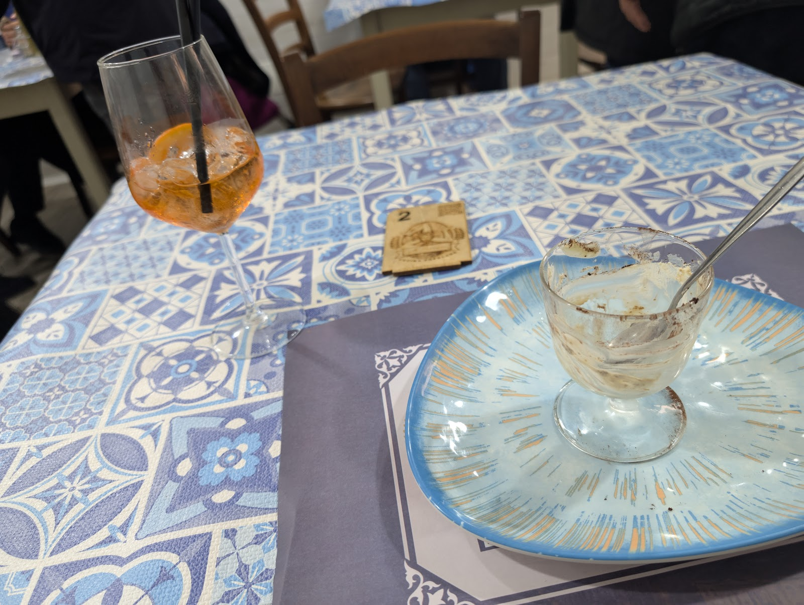
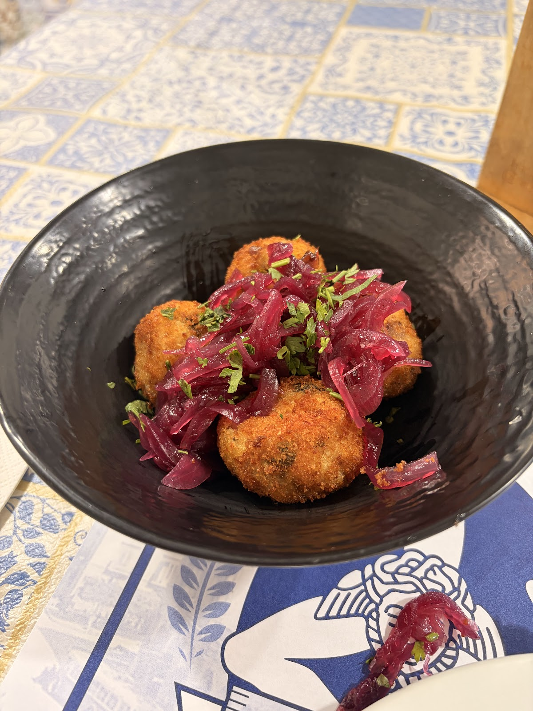
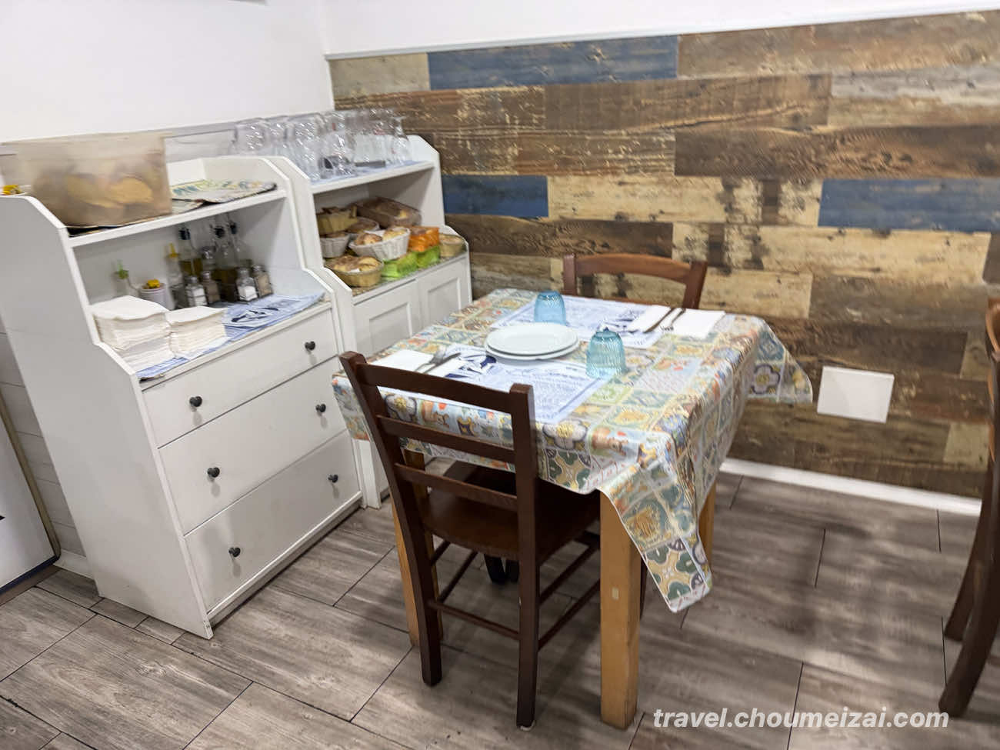
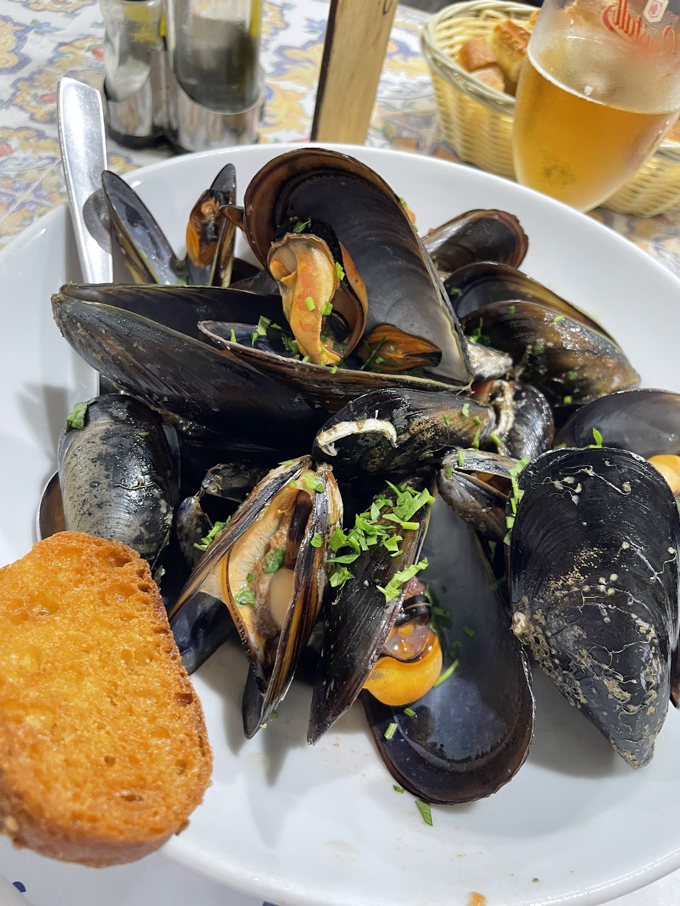
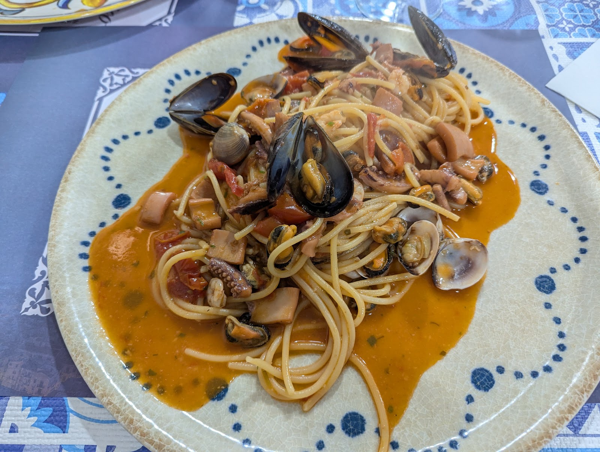
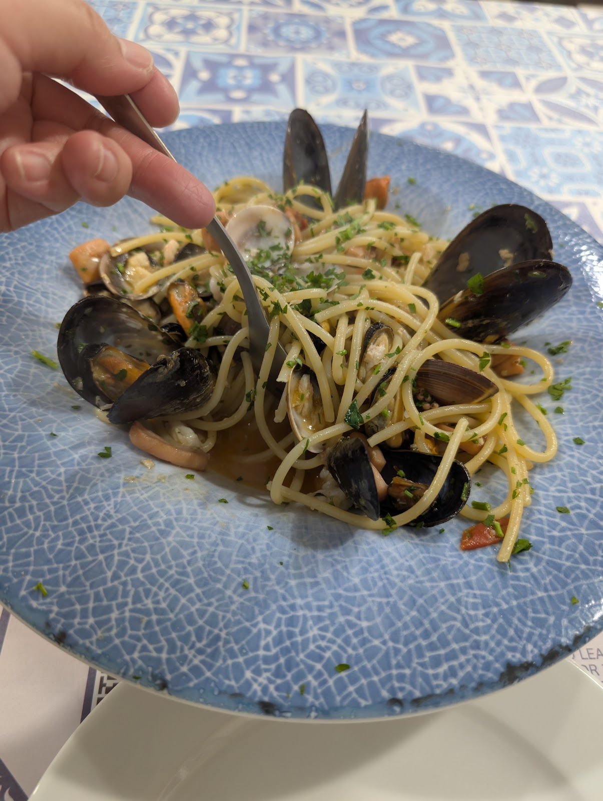
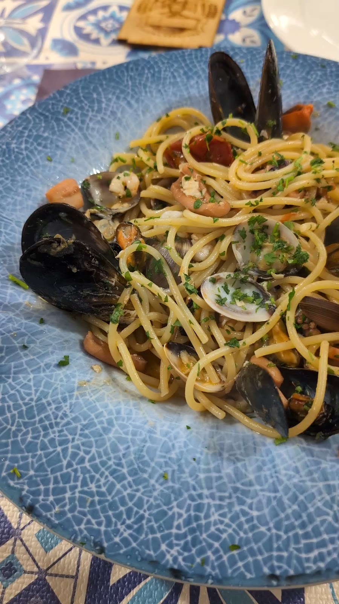
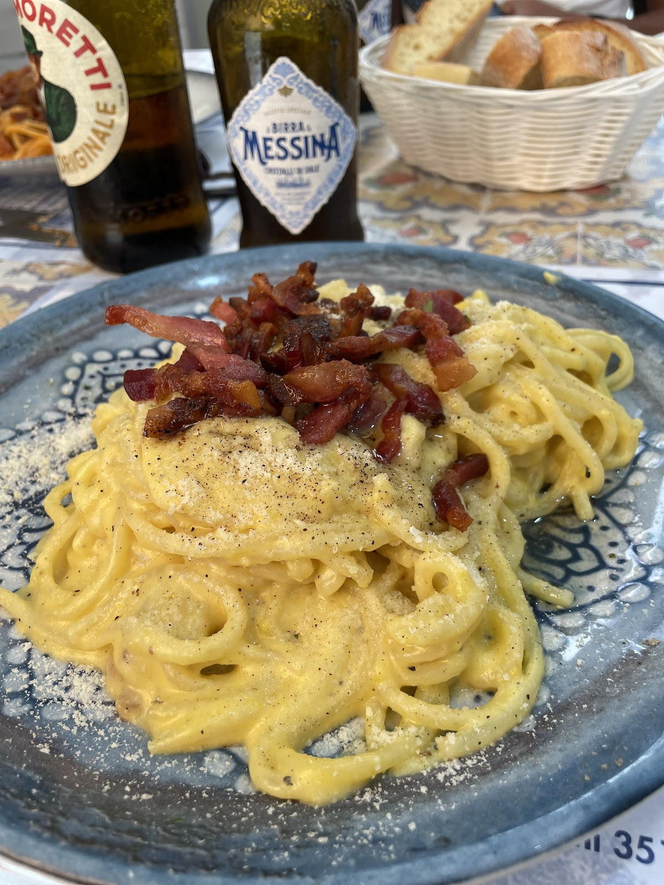
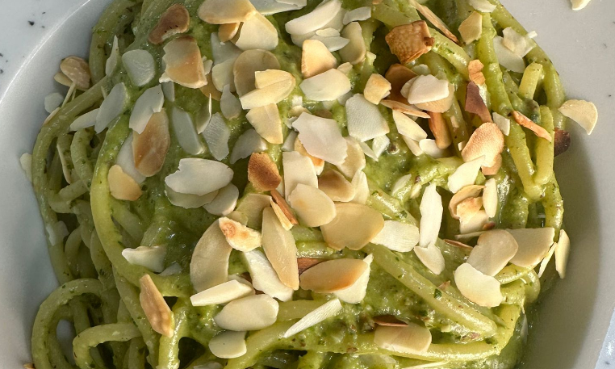

In tavola






La cucina popolare palermitana che ti accoglie col sorriso — piatti veri, prezzi di una volta. Palermo's people's kitchen — real dishes, old-school prices.
A cinque minuti a piedi da Palermo Centrale c'è una sala luminosa dove la parola d'ordine è "cucina popolare": spada dello stretto, involtini siciliani, caponata — le ricette dei quartieri, ai prezzi dei quartieri.
Five minutes from the central station, a bright room where the motto is "people's cooking": swordfish, Sicilian involtini, caponata — neighbourhood recipes at neighbourhood prices.
Quattro stelle e sette su Google, e il piatto più fotografato resta sempre lo stesso: la pasta del giorno.


Pesce spada, agrumi e granella di pistacchi — 8 €. Swordfish, citrus, pistachio.

Il classico che profuma di mare — 6 €. The mussel classic.

Il secondo della domenica, ogni giorno — 8 €.





"Surprisingly great spot near Palermo Centrale. Didn't expect much from a restaurant right next to the main station, but Al Sorriso delivered."
"Located near the train station, basically a 5 minute walk. The restaurant is well lit inside — lovely place."
"We went at the start of our trip and at the end. The food is all authentic Sicilian — no bewildering menu choices, just brilliant food and great service."
★ 4,7 / 5 — 2.377 recensioni su Google
| Lunedì – Sabato | 12:00 – 16:00 · 19:00 – 23:00 |
| Domenica | Chiuso · Closed |
Via Rocco Pirri 20, 90123 Palermo — 5 minuti dalla Stazione Centrale
Scrivici su WhatsApp per prenotare un tavolo. Message us on WhatsApp to book a table.
💬 WhatsApp 📞 351 900 5584 Apri in Maps